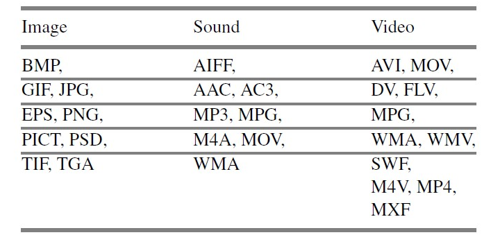
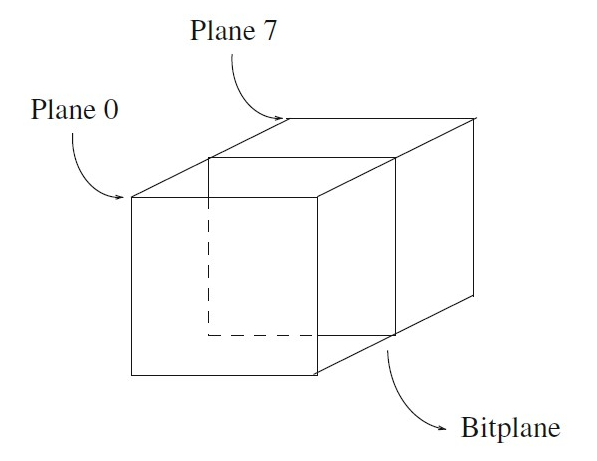

Referensentasi Grafik dan Gambar
Graphics/Image Data Types:
1. 1-Bit images
2. 8-Bit gray-level images
3. Image data types
4. 24-Bit color images
5. Higher bit-depth images
6. 8-Bit color images
7. 7 color lookup tables
1-Bit images:
8-Bit gray-level images:
Image data types:
The following sections introduce some of the most common data types for Graphics and image file formats: 24-bit color and 8-bit color. We then
discuss file formats. There are some formats that are restricted to particular hardware/operating system platform (e.g., X-windows in linux), while
many others are platform-independent, or cross-platform, formats. Even if some formats are not cross-platform, conversion application can recognize
and translate formats from one system to another.